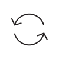

Features
Simple grid system
Scss support
Built in local server

Live browser reloading
Autoprefixer support
CSS/JS/Images optimization

$ git clone git@github.com:sanographix/rin.git test-repo $ cd test-repo $ npm install $ npm start